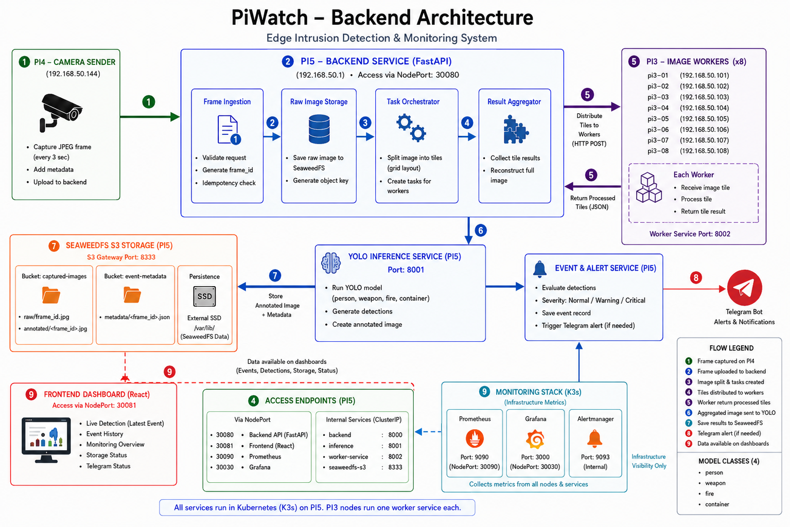

Backend Architecture Design
1. Architecture Purpose
The PiWatch backend architecture separates camera capture, orchestration, distributed preprocessing, YOLO inference, persistent storage, monitoring and user access into clear services. This allows each stage to be tested and deployed independently while keeping the edge-detection pipeline understandable and recoverable.
2. System Architecture Diagram

Figure 1 — PiWatch backend and edge-processing architecture. The Pi4 camera sends frames to the backend, Pi3 workers process image tiles, Pi5 performs YOLO inference, SeaweedFS stores evidence, the frontend reads results through the API, and the monitoring stack can feed infrastructure conditions into the event and alert workflow.
This figure represents the baseline deployed architecture. The validated Pi3 backend-canary and future multi-replica backend design are documented separately in Section 10.
3. Hardware and Network Roles
| Device or service | Address or identity | Responsibility |
|---|---|---|
| Raspberry Pi 5 | cloud |
K3s control plane, production backend, inference, NFS/PXE services and storage access |
| Pi5 private interface | 192.168.50.1 |
Private edge-network gateway and NFS endpoint |
| Pi5 Wi-Fi/LAN interface | 192.168.178.200 |
Current frontend/backend access from the external network |
| Raspberry Pi 4 camera | 192.168.50.144 |
Captures and uploads frames |
| Raspberry Pi 3 workers | rpi3-01 to rpi3-08 |
Distributed image preprocessing |
| Pi3 addresses | 192.168.50.101 to 192.168.50.108 |
Internal worker communication |
| External SSD | Mounted on Pi5 at /srv/nfs |
PXE roots, SeaweedFS data and container storage |
The Pi3 nodes PXE-boot from node-specific NFS roots such as:
This means the Pi3 filesystems are physically stored on the SSD, but each Pi3 has its own root directory.
4. Deployed Kubernetes Topology
K3s cluster
├── Node: cloud (Raspberry Pi 5)
│ ├── backend pod
│ ├── inference pod
│ ├── Traefik pod
│ ├── Prometheus/Grafana components
│ └── SeaweedFS-related storage access
│
├── Nodes: rpi3-01 ... rpi3-08
│ ├── image-worker pods
│ └── ServiceLB pods
│
├── Namespace: edge-monitoring
│ ├── Deployment/backend
│ ├── Service/backend (NodePort 30080)
│ ├── Deployment/inference
│ ├── Service/inference
│ ├── Deployment/image-worker
│ └── Service/image-worker-headless
│
├── Namespace: seaweedfs
│ └── SeaweedFS master, filer, volume and S3 services
│
└── Namespace: monitoring
└── Prometheus, Alertmanager and Grafana
Screenshot placeholder — Kubernetes topology
Usekubectl get pods -A -o wideand capture the relevant PiWatch workloads and nodes.
Suggested filename:assets/backend/kubernetes-backend-topology.png
5. End-to-End Processing Flow
Step 1 — Camera capture
The Pi4 captures a JPEG frame and generates metadata including the sensor ID, location, timestamp, sequence number, upload source and checksum.
Step 2 — Frame upload
The camera sends the frame to:
The Kubernetes NodePort forwards the request to the ready backend pod selected by the backend Service.
Step 3 — Validation and frame identity
The backend validates the file type, file size, required metadata and optional checksum. It accepts a supplied capture_id or generates a deterministic one.
Step 4 — Raw-image storage
The unmodified uploaded bytes are stored in the captured-images SeaweedFS bucket before the distributed or inference stages.
Step 5 — Worker discovery
The backend resolves worker endpoints through:
Only healthy workers are selected.
Step 6 — Adaptive tile layout
The backend chooses a layout based on the number of healthy workers:
Step 7 — Pi3 tile preprocessing
Tiles are sent to worker pods over HTTP. A worker can apply CLAHE, grayscale or identity processing, then returns the processed tile with checksum and latency metadata.
Step 8 — Retry and fallback
Failed tiles can be retried on another worker. When all attempts fail, the original tile is retained. The frame therefore continues through the pipeline instead of being discarded.
Step 9 — Reconstruction
The backend reconstructs one frame from successful and fallback tiles. Overlap is removed using each tile's core region.
Step 10 — YOLO inference
The reconstructed frame is sent to:
The inference service returns detections, confidence values, bounding boxes, severity, latency and annotated JPEG bytes.
Step 11 — Event and alert creation
The backend creates one event for the frame and optional critical alerts for configured threat detections.
Step 12 — Persistent result storage
The backend stores image evidence and JSON metadata in SeaweedFS.
Step 13 — Frontend and notification access
The frontend reads events and images through the backend API. Critical alerts can be delivered through Telegram. Monitoring metrics are retrieved from Prometheus and can contribute infrastructure alerts.
Screenshot placeholder — complete frame flow
Add a sequence or flow screenshot showing upload, worker calls, inference, storage and event output.
Suggested filename:assets/backend/backend-frame-pipeline.png
6. Core Architecture Components
6.1 FastAPI backend
The backend is the orchestration layer. It does not load the YOLO model directly in the deployed architecture. Its main responsibilities are request validation, distributed processing, storage, metadata generation, API delivery and integrations.
6.2 Image worker service
The worker service is intentionally lightweight and runs on the Pi3 nodes. It exposes a health endpoint and an image-processing endpoint on port 8002.
6.3 YOLO inference service
The inference service runs separately on Pi5 so the large model and inference dependencies do not have to exist in every backend or worker image.
6.4 SeaweedFS storage
SeaweedFS provides S3-compatible object storage. The application uses shared buckets for evidence and metadata rather than storing authoritative results only inside one pod.
6.5 Monitoring stack
Prometheus gathers node and application metrics. Grafana provides visualization, while the backend monitoring API converts Prometheus results into the frontend response format.
6.6 Event and alert service
Detection results are transformed into event and alert records. Monitoring conditions can also feed the event/alert path. Telegram is a downstream notification channel, not the only way to see a detection.
7. Service Communication Matrix
| Source | Destination | Address or Service | Purpose |
|---|---|---|---|
| Pi4 camera | Backend | 192.168.50.1:30080 |
Upload frames |
| Frontend | Backend | Current Pi5/NodePort address | Read events, images and monitoring data |
| Backend | Workers | image-worker-headless...:8002 |
Health checks and tile processing |
| Backend | Inference | inference...:8001 |
YOLO inference |
| Backend | SeaweedFS | seaweedfs-s3...:8333 |
Object read/write operations |
| Backend | Prometheus | prometheus-kube-prometheus-prometheus.monitoring...:9090 |
Metrics queries |
| Backend | Kubernetes API | In-cluster API through ServiceAccount | Pod and workload status |
| Backend | Telegram API | HTTPS | Critical notifications |
| Prometheus | Backend | /metrics |
Backend metrics collection |
8. Storage Architecture
External SSD on Pi5 (/srv/nfs)
├── Pi3 PXE/NFS roots
│ ├── rpi3-01
│ ├── rpi3-02
│ └── ...
├── SeaweedFS data
├── Docker data
└── other cluster storage
Application evidence is stored through SeaweedFS:
captured-images
├── raw images
└── annotated images
event-metadata
├── frame metadata
├── detection metadata
├── events
└── alerts
A normal Kubernetes hostPath on each Pi3 would refer to a different node-specific NFS root. For that reason, multi-replica backend pods should not rely on a supposedly shared /data hostPath. The validated canary uses pod-local emptyDir volumes and keeps shared evidence in SeaweedFS.
9. Reliability and Failure Behaviour
Worker failure
When one or more Pi3 workers are unavailable:
- the headless Service no longer returns unhealthy endpoints;
- the backend uses the remaining workers;
- the tile layout can shrink;
- failed requests are retried;
- original-tile or full-frame fallback remains available.
Worker loss therefore reduces capacity but does not necessarily stop frame processing.
Backend pod failure
Kubernetes restarts the backend pod. Readiness probes keep it out of Service traffic until /health succeeds.
Inference failure
The backend cannot complete new detections until the inference service becomes available. Current inference is a single Pi5 workload.
Storage failure
If SeaweedFS or the Pi5 SSD is unavailable, evidence storage and retrieval are affected.
Pi5 failure
Pi5 remains a system-wide dependency because it hosts the K3s control plane, PXE/NFS services, inference and shared storage access. Backend replicas on Pi3 improve Pi3-level service availability but do not remove this Pi5 dependency.
10. Backend HA Architecture: Validated Canary and Target
10.1 Why the normal backend image failed on Pi3
The Pi3 containerd directory is inside the NFS-backed PXE root. The original backend image was approximately 3.26 GB; after removing YOLO dependencies, the backend-only image was approximately 198 MB. Even the smaller image repeatedly failed during container creation with context deadline exceeded before Python started.
The existing edge-worker:v1 image could start successfully. A repacked worker image with no new filesystem content also started, proving that newly imported manifests were valid and that the problem was the large number of new backend dependency files.
10.2 Bundle-based solution
The validated solution uses:
edge-worker:v1 base image
+
one compressed backend-runtime.tar.gz file
↓
container starts successfully
↓
archive extracted into pod-local /runtime
↓
backend starts with PYTHONPATH=/runtime/python:/runtime
A real backend-bundle-canary pod reached 1/1 Ready on rpi3-01 and successfully served health, documentation, Kubernetes and storage APIs.
10.3 Target multi-Pi3 design
The planned design is one edge-node pod on each Pi3 with two containers:
Pi3 edge-node pod
├── worker container
│ ├── worker service
│ └── port 8002
│
└── backend container
├── bundled backend runtime
└── port 8000
The worker and backend remain separate processes and can have independent probes and resource limits while sharing the same pod network.
The backend Service can then select all ready backend containers and distribute requests across them. Kubernetes already performs this internal load balancing; MetalLB is not required merely to balance traffic between backend pods.
Screenshot placeholder — target HA canary
Show the Pi3 backend bundle pod and its successful readiness, storage and API tests.
Suggested filename:assets/backend/backend-ha-canary-validation.png
10.4 HA limitations
Even after deploying backend containers on every Pi3, the system will still depend on Pi5 for:
- K3s control plane;
- PXE boot and NFS roots;
- inference;
- SeaweedFS and SSD access.
This should be described as backend and worker fault tolerance, not complete system-level HA.
11. Backend Source Structure
backend/
├── app/
│ ├── api/
│ │ ├── frames.py
│ │ ├── events.py
│ │ ├── images.py
│ │ ├── alerts.py
│ │ ├── monitoring.py
│ │ ├── kubernetes.py
│ │ ├── storage.py
│ │ ├── telegram.py
│ │ └── model_dataset.py
│ ├── core/
│ │ └── config.py
│ ├── services/
│ │ ├── frame_processing_service.py
│ │ ├── distributed_frame_service.py
│ │ ├── image_splitter.py
│ │ ├── worker_registry.py
│ │ ├── task_dispatcher.py
│ │ ├── inference_client.py
│ │ ├── storage_service.py
│ │ ├── storage_status_service.py
│ │ ├── alert_service.py
│ │ └── telegram_service.py
│ └── main.py
├── inference_app/
├── worker_app/
├── docker/
│ ├── Dockerfile.backend
│ ├── Dockerfile.inference
│ ├── Dockerfile.worker
│ ├── Dockerfile.edge-node
│ └── Dockerfile.edge-node-bundle
├── requirements/
│ ├── backend.txt
│ ├── backend-extra.txt
│ ├── inference.txt
│ └── worker.txt
└── k8s/
├── 00-namespace-config.yaml
├── 05-backend-rbac.yaml
├── 10-backend.yaml
├── 12-backend-bundle-canary.yaml
├── 20-inference.yaml
└── 30-workers.yaml
Update this tree if filenames differ in the final repository.
12. Architecture Validation Evidence
Capture the following evidence for the final report:
piwatch-system-architecture.png— architecture diagram included above.kubernetes-backend-topology.png— pods and nodes.backend-frame-pipeline.png— end-to-end processing flow.backend-worker-endpoints.png— headless Service endpoints.backend-inference-logs.png— successful inference call.backend-seaweedfs-objects.png— stored raw, annotated and JSON objects.backend-ha-canary-validation.png— Pi3 backend bundle canary.backend-monitoring-overview.png— Prometheus-backed monitoring response.frontend-live-detection.png— final annotated evidence in the UI.
Recommended directory: